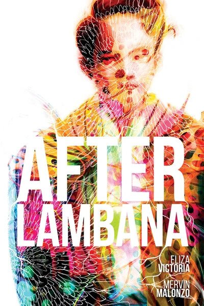
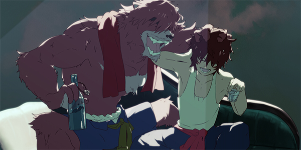

I grew up reading several books and even until now, I still find it enjoyable to read something new and use my imagination.
My favorite books are:

- Jose Arcadio Buendia
- Aomame
These are the films (and Youtube videos) that I watched from before where I draw inspiration from when I try writing and drawing.
